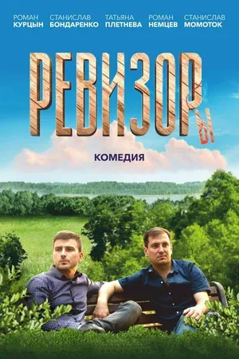
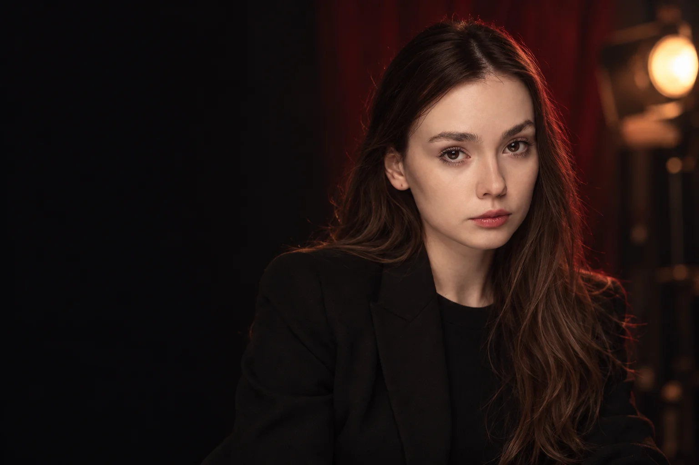

ПРОЕКТ / 202501 / 2025
Ревизоры
Нина ↗

01 / THE ACTRESS WORLD
Light. Character. Cinema.
EEKLERA / Дизайн актёрского портфолио01 / COLOUR SYSTEM
#0b0b0c#141416#f2efe9#ff6c76#e9a571#58343502 / TYPOGRAPHY
Другая история.
Manrope — ясные подписи, параметры и интерфейс.
OSWALD / PLAYFAIR DISPLAY / MANROPE
03 / ACTIONS & STATES
Hover — тёплая подсветка. Focus — чёткий контур. Disabled — приглушённое состояние.
04 / MOTION STUDIO
ACTRESSFILM STRIP / LIGHT LEAK / DEPTH
Прокрутка двигает слои. В покое сцена не перерисовывается. «Проиграть переход» — демонстрация без перехода на другую страницу.
05 / PROJECT CARD

ПРОЕКТ / 2025Нина ↗
Перфорация, номер кадра, постер, роль и год. На ПК карточки проходят перед камерой; на телефоне — горизонтальная лента.
Смотреть в разделе ↗06 / VIDEO PLAYER
Архивная запись. Возраст — на момент съёмки. Видео загружается после нажатия; закрытие останавливает воспроизведение.
07 / NAVIGATION & FILTERS
Демонстрация: выбрано «Все». Рабочий список — в разделе «Актриса».
08 / CASTING DATA
Проверенные факты. Настоящие кастинг-фото. Неподтверждённые данные не заполняются автоматически.
09 / MOBILE & ACCESSIBILITY
На телефоне — вертикальная композиция, компактное меню и свайп карточек. На ПК — закреплённые сцены и глубина. Есть выключатель эффектов, видимый фокус, клавиатурное управление и Escape в плеере.
Открыть ACTRESS ↗